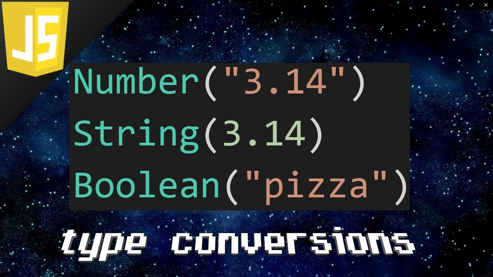

Var, Let, and Const – What's the Difference?
Var Before the advent of ES6, var declarations ruled. There are issues associated with variables declared with var, though. That is why it was necessary for new ways to declare variables to emerge. First, let's get to understand var more before we discuss those issues read the full article
JavaScript JSON

What is JSON? JSON or JavaScript Object Notation is a format for structuring data. What is it used for? Like XML, it is one of the way of formatting the data. Such format of data is used by web applications to communicate with each other read the full article
JavaScript | Type Conversion
JavaScript is loosely typed language and most of the time operators automatically convert a value to the right type but there are also cases when we need to explicitly do type conversions.
While JavaScript provides numerous ways to convert data from one type to another but there are two most common data conversions :
1. Converting Values to String
2. Converting Values to Numbers
read the full article